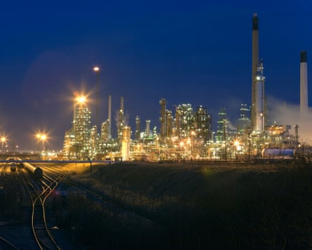
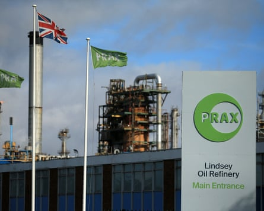
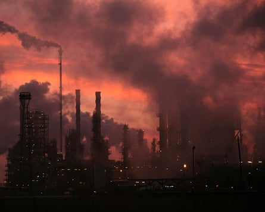

I t was mid-April and the government had just finished nationalising British Steel , to prevent thousands of job losses at the Scunthorpe steelworks, when word reached Whitehall that another national infrastructure asset was wobbling.
Prax Group, owner of the Lindsey oil refinery on the Humber estuary in northern England, was rumoured to be in financial trouble, stoking fears about jobs and disruption to critical fuel supplies.
In a hastily arranged meeting at the department for energy security and net zero (DESNZ) on 13 May, well-placed sources said, a concerned Ed Miliband, the energy secretary, took solace from Prax’s owner and sole director, Winston Soosaipillai.
Prax had suffered some setbacks, the seldom-seen oil boss is understood to have said, but it was not in any imminent danger and was even planning investment for the future. Within weeks, these assurances had crumbled to dust.
By Friday of last week, ministers had been informed that Prax could not pay its debts – including sums owed to HM Revenue and Customs that the Financial Times reported had reached up to £250m – and was headed for insolvency. The shock update put 625 jobs at risk and sent officials scrambling to keep the refinery going. By Monday, administrators had been called in .
The refinery’s main supplier, Glencore, initially agreedto provide its crude oil for free while the government began its search for a buyer, in what one person close to the situation described as a “gesture of goodwill”. A deal has since been reached that will mean Glencore is paid out of taxpayers’ funds.
Winston Soosaipillai.Photograph: Prax Group
The company’s sudden collapse blind-sided the government and even Glencore, famed for the global intelligence network that informs its trading activity. But to Prax insiders, it came as no surprise.
Multiple sources, including former staff, described a house of cards stacked on increasingly unstable foundations due its owners’ insatiable thirst for debt-fuelled growth, building an empire which included the refinery, trading in oil and petrol stations.
Prax’s recent woes, one former employee claimed, began to spiral out of control more than a year before the government got wind that anything was wrong.
“They started the process of reducing costs in March 2024,” said the source. “They sold petrol station stores and made hundreds of people redundant. The strategy was to get salaries out of the company. The mood was horrible.”
The accountancy firm Deloitte was parachuted in during 2023 to run a “performance improvement programme”, in effect taking charge of the business for about three months. One of its consultants was installed as a joint-chief executive the following year, a sharing of power that took place under the codename “Project King”.
It was an apt choice of name, for Soosaipillai was the de facto king of Prax.
Better known by his middle names, Sanjeev Kumar, Soosaipillai owned and ran the business alongside his wife, Arani, the company’s head of human resources, for 25 years.
They hold 80% of the equity directly and 20% through family trusts.
The Lindsey oil refinery in Lincolnshire.Photograph: Alamy
That in itself is unusual, in an industry dominated by global corporations such as ExxonMobil and India’s Essar, overseen by teams of seasoned executives.
Soosaipillai, in contrast, is the sole director of Lindsey and the wider Prax Group, Companies House filings show.
Former employees said that even senior staff knew little about company strategy or dealings, with information tightly controlled among a tiny, close-knit group.
This heavily top-down structure reflects the company’s extraordinary growth story.
The Soosaipillais bought their first petrol station in 1999, expanding into the importing, blending and storage of fuels.
They ran State Oil , as the business was then known, from a modest £65,000 flat in Weybridge, Surrey, building a multinational oil and gas business with billions in revenue and 1,300 staff in a little over two decades.
Contemporary reports – and former employees – suggest the business began to take off with the recruitment in 2009 of a lawyer and oil trader called Don Camillo.
By 2014, with Camillo’s help, the business was fuelling regular profits, not to mention a steady and increasing stream of dividends that helped the Soosaipillais move into a £4.5m mansion in St George’s Hill , the Surrey estate better known as the bolthole of Russian oligarchs.
The business continued to grow, via the 2015 acquisition of the fuel retail business Harvest Energy and later via the surprise purchase in 2021 of the Lindsey oil refinery from the French oil company Total for nearly $170m (£125m).
The deal more than tripled the group’s revenues, to nearly $10bn, but also sent debts soaring.
Annual interest payments had rocketed from $19m to $79m by 2023, surging again to $133m in 2024. Prax recorded a $75m loss. Its total liabilities had reached $2.3bn, nearly 10 times the level immediately before the Lindsey takeover.
A Union flag flies outside the Prax Lindsey oil refinery in North Killingholme, England.Photograph: Lindsey Parnaby/AFP/Getty Images
In a letter to staff, sent shortly after administrators were appointed, Soosaipillai acknowledged that the cost of operating Prax Lindsey had become “increasingly unsustainable” and that this had spread into the rest of the group due to its divisions’ “interdependent” nature.
Yet, even as the debt pile was mounting, supply deals with global oil traders – first Trafigura and then Glencore – ensured a constant flow of crude.
The refinery is the smallest of the five that remain in the UK since Grangemouth, in Scotland, stopped processing crude earlier this year .
But, at 5.4m tonnes annually, it still accounts for nearly 10% of national capacity, supplying everything from petrol forecourts to Heathrow airport.
Owning such a strategically important asset has proved lucrative.
As the Guardian revealed earlier this week, the husband and wife owners have extracted about £11.5m in pay and dividends since the Lindsey deal alone.
Yet the couple, who are said to be extremely publicity-shy, did not flaunt their wealth.
“He is very quiet and studious,” said a former supplier, who asked not to be named. “There is nothing flash about them. They drive a 10-year-old Land Rover to work.”
But the vaulting ambition that helped Prax grow came with a darker side, according to some accounts.
The supplier fell out with Soosaipillai when Prax, he says, inexplicably refused to pay invoices worth tens of thousands. The company coughed up only after a threat of legal action, he alleges.
Others referred to a ruthless streak in Soosaipillai, who allegedly viewed mass redundancies and severe cost-cutting as the solution to strategic missteps.
This, two sources said, sometimes led to instability as people with operational expertise left after short tenures.
The sun rises over Lindsey oil refinery in North Lincolnshire.Photograph: Christopher Furlong/Getty Images
Ministers got a taste of the company’s sometimes chaotic modus operandi last month, when Prax suddenly admitted that it was at risk of insolvency after all.
Officials asked for financial information to help them assess the scale of the problem. Despite repeated requests, Prax refused.
The near-term cause of the collapse remains a mystery, although one source close to the situation claimed that Prax could not pay its debts to HM Revenue and Customs.
Anyone keeping a close eye on corporate filings might have seen the warning signs.
Even before “Project King”, Prax’s annual accounts had been restated several times in the past few years to reflect a worse position than before.
In 2023, the company attempted to pay a dividend to the Soosaipillais, only to admit that it didn’t have enough cash in its distributable reserves. The payout had to be reversed and reclassified for accounting purposes.
Nevertheless, industry experts were not expecting Prax Lindsey to fail.
Long-term conditions have been tough in Europe, amid falling demand for carbon-based fuel, high electricity costs, and fierce competition from rivals in Asia, the Middle East and Africa.
But Alan Gelder, a refining expert at the global energy and mining consultancy Wood Mackenzie, said margins had been much better in the first half of 2025 due to tight capacity in the market.
“It surprised us,” said Gelder. “[Lindsey] was an OK asset, not brilliant but probably cash positive.”
One former employee put the failure down to a culture of relentless expansion.
Arani Kumar.Photograph: Prax Petroleum
As well as large takeovers of assets of questionable quality, such as Lindsey, there was an abortive venture in Nigeria and a vain attempt to buy Shell’s business in Pakistan.
And, although Prax carried itself like a global player, it didn’t behave like one, sources said.
“They were still working as they were when they started in a flat in Weybridge, doing things as if they had only one petrol station,” said one former employee.
“Every few years they’d take on a bigger acquisition and eventually I think it was too much,” said another. “The bubble had to burst at some point.”
The government has now ordered the Insolvency Service to investigate the conduct of “directors”. In practice, that means Soosaipillai alone.
Soosaipillai wrote in his letter to staff that he was “deeply sorry”. Those employees must now wait to see if government officials can find a buyer to secure the future of his precarious realm.
As one current employee put it: “We’re just sitting around, waiting for the guillotine to fall.”
The Soosaipillais did not return requests for comment.
The Guardian approached someone believed to be Don Camillo for comment. He denied being Camillo and hung up the phone.
Deloitte declined to comment.